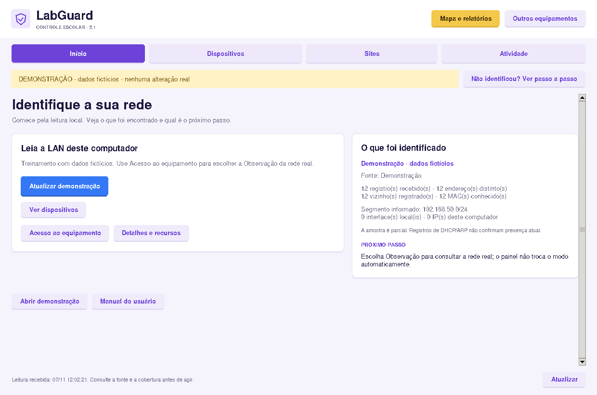

01 / MÁQUINAS
Máquinas
e internet.
Veja IPs e MACs com evidências e confira conflitos ou dados antigos. A amostra local pode ser parcial; controles dependem do equipamento conectado.
Ver na demonstraçãoLAB-03Internet permitida
Identifique os endereços conhecidos pela rede local, confira a origem e a idade da leitura. Conecte um roteador compatível para ampliar a amostra e aplicar os bloqueios disponíveis.
Código disponível no GitHub • Interface em português

Interface real do aplicativo · dados de demonstração
Consulte o estado da rede e escolha a ação para cada computador ou domínio.
Veja IPs e MACs com evidências e confira conflitos ou dados antigos. A amostra local pode ser parcial; controles dependem do equipamento conectado.
Ver na demonstraçãoOrganize domínios de jogos, IA, adultos e outros no banco local. Aplique a lista quando a integração confirmar suporte a bloqueios DNS.
Explorar bloqueiosConsulte equipamentos compatíveis, controle portas autorizadas e adicione perfis. Cada adaptador informa exatamente o que oferece.
Conferir compatibilidadeCadastre, busque, importe, exporte e restaure registros. Edite a política mesmo sem conexão e aplique depois, em lotes explícitos.
Conhecer o bancoConsulte jogos reconhecidos por WinRM/HTTPS ou SSH já habilitado. Envie avisos e remova somente pacotes compatíveis, após conferir o computador.
Ver requisitos e limitesVeja o inventário desenhado e exporte o mapa em SVG ou os relatórios em PDF, HTML e CSV. As ligações inferidas ficam identificadas.
Consultar o manualTeste os controles abaixo. Esta demonstração funciona apenas no navegador e não acessa nem altera sua rede.
Use o botão de cada card para simular o controle.
192.168.50.101
192.168.50.102
192.168.50.103
192.168.50.10
Simule a ativação do perfil de domínios cadastrados.
No aplicativo real, o inventário reúne máquinas observadas. Consultas DNS podem vir de serviços em segundo plano e não comprovam uma visita do aluno.
O aplicativo abre em observação local. Ele consulta os dados disponíveis no computador; nenhuma regra da rede é alterada nessa etapa.
Use Identificar minha rede. Confira a fonte da leitura, o gateway e os vizinhos disponíveis.
Informe acesso administrativo a um roteador compatível. O diagnóstico informa as funções e os requisitos encontrados.
Escolha a máquina ou o domínio e confirme a ação. As regras são aplicadas pelo equipamento que já controla o tráfego.
Executa o painel em qualquer posição com acesso ao equipamento.
Aplica as regras de internet e DNS autorizadas.
Clientes observados pelo roteador ou pela fonte local.
Estar na rede permite observar dados locais. Para bloquear, o roteador precisa oferecer a integração e as permissões exigidas. O modo gateway Linux continua opcional para instalações que já o utilizam.
Marca, modelo, firmware, permissões e configuração definem quais ações ficam disponíveis.
| Conexão | Recursos | Requisitos |
|---|---|---|
| Observação localWindows e Linux | IP local, gateway e vizinhos disponíveis. Mapa e relatórios parciais. | Sem senha de roteador. Não aplica bloqueios. |
| MikroTik RouterOS 7REST por HTTPS | Inventário e regras próprias de IP/MAC/DNS quando os requisitos forem confirmados. | API habilitada, certificado validado e usuário autorizado; diagnóstico de DNS, WAN, IPv6 e FastTrack. |
| TP-Link JetStream e Cisco CatalystCentral de equipamentos por SSH | Inventário e controle de portas de acesso autorizadas, conforme o perfil. | CLI compatível e chave SSH; não inclui filtro de domínios por esses perfis. |
| OpenWrtConsulta por SSH | Consulta de interfaces e concessões DHCP no perfil existente. | Acesso SSH por chave. Perfil somente consulta. |
| Modem Vivo e outros modelos | Observação local disponível. Controle direto depende de um adaptador compatível com o modelo. | O aplicativo não tenta senhas, contorna autenticação ou promete uma API universal. |
O software não intercepta tráfego pela posição do PC. O histórico DNS só aparece quando a fonte fornece esses registros; consultas não comprovam visitas.
Aplicativos para Windows e Linux, com pacotes de servidor para administração sem interface gráfica. Comece na observação local e conecte um equipamento compatível quando precisar aplicar regras.
Confira a versão e os arquivos disponíveis no GitHub.
 LabGuardDesktop e servidor Guia de início ↗ Guia dos servidores ↗Desktop e servidor administram as fontes disponíveis. Nenhum deles se torna um roteador apenas por estar instalado.
LabGuardDesktop e servidor Guia de início ↗ Guia dos servidores ↗Desktop e servidor administram as fontes disponíveis. Nenhum deles se torna um roteador apenas por estar instalado.Instalador com Python incluído, atalhos e desinstalação. Também disponível em versão portátil.
Ver versõesVer versão portátilGuia para Windows ↗Pacote Debian/Ubuntu e versão portátil para Linux x86_64, com o mesmo painel visual do laboratório.
Ver versõesVer pacote portátilGuia para Linux ↗Serviço para Windows Server e systemd no Linux. Acesso local por padrão e perfis separados de consulta e administração.
Ver pacote WindowsVer pacote LinuxGuia dos servidores ↗Os links usam os arquivos publicados na versão mais recente. Se um pacote não estiver disponível, a página de versões mostra o que já foi publicado. A instalação do aplicativo não altera automaticamente a rede do colégio.
15 páginas e 14 capítulos: primeira abertura, recuperação de identificação, conexão ao equipamento, banco de sites, mapa, Wi-Fi e limites de cada fonte.
Escolha um assunto no sumário ou abra o passo a passo para erro de identificação: IP, gateway, MAC, modelo e conexão ao equipamento.
Resolver identificaçãoBaixe as instruções para consultar no laboratório ou compartilhar com a equipe responsável pela rede.
Baixar manual em PDFO painel fica no PC da TI ou do professor. As alterações são executadas por um equipamento compatível.
Não para observação local ou administração direta de um roteador compatível que já controla a rede. O modo gateway anterior continua disponível como opção avançada.
Abrir o passo a passo completo. Não inclua senhas, tokens ou chaves ao pedir suporte.
A observação local funciona com os dados disponíveis no PC. Bloquear pelo modem depende do modelo e da interface administrativa: sem um adaptador compatível, o aplicativo indica que o controle não está disponível.
Não. É necessário acesso autorizado ao roteador ou controlador compatível. Redes de convidados, isolamento e NAT também podem limitar a observação. O aplicativo não faz ataques ARP, interceptação ou desautenticação Wi-Fi.
O histórico depende dos registros fornecidos pela fonte. A observação local e o inventário RouterOS não fornecem um histórico DNS por aluno nesta edição. Conteúdo HTTPS, mensagens e URLs completas não são coletados.
Cadastre os domínios no banco e aplique a lista em uma conexão com suporte DNS confirmado. O catálogo de IA pode preparar os cadastros. DNS alternativo, VPNs, conteúdo em cache e IA local podem limitar esse bloqueio.
A administração remota continua usando WinRM/HTTPS ou SSH já configurado. A remoção é restrita a pacotes reconhecidos e exige confirmação; Roblox clássico e Minecraft para Windows ficam para revisão manual.